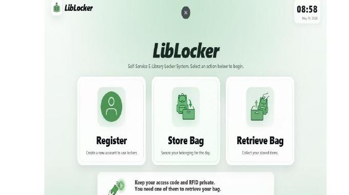
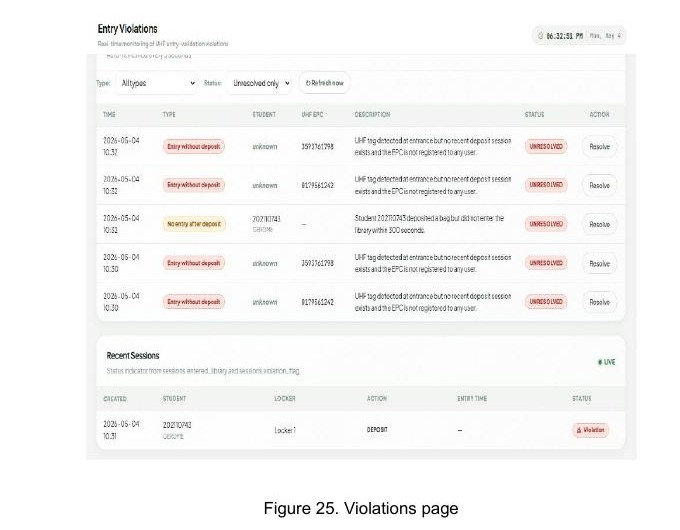

RFID Authentication
Implemented the HF RFID kiosk workflow and UHF doorway detection used to associate physical RFID credentials with registered users.
Featured Project · 2026
Automated Library Baggage Counter with Dual-Frequency RFID Authentication

LibLocker prototype deployed at the CvSU-CCAT Campus E-Library.
LibLocker is an automated library baggage counter developed for the Cavite State University–CCAT Campus E-Library. It combines dual-frequency RFID authentication, automated locker control, camera-assisted transaction logging, and a web-based monitoring dashboard to improve baggage security, accountability, and transaction efficiency.
The project was developed as an undergraduate Computer Engineering design project and was installed, tested, and evaluated at the CCAT E-Library.
I served as the Lead Developer and was primarily responsible for the software and system implementation. I personally developed the Raspberry Pi application, RFID authentication logic, SQLite database integration, kiosk interface, administrative dashboard, locker-management logic, and software integration with the hardware system. My team members assisted with hardware configuration and related hardware work.
I used AI-assisted development tools throughout the project to support coding, debugging, troubleshooting, and development workflows. I remained responsible for the system design, implementation decisions, integration, testing, and adaptation of the software to the deployment environment.
Implemented the HF RFID kiosk workflow and UHF doorway detection used to associate physical RFID credentials with registered users.
Developed the Python-based application that coordinates the kiosk, RFID services, locker control, database operations, and connected hardware.
Implemented locker assignment, retrieval, availability monitoring, electronic locking, and door-state verification.
Built the Flask-based administrative interface for monitoring lockers, users, transactions, activity logs, and violations.
Integrated camera-assisted transaction capture so deposit and retrieval events can be recorded with timestamped visual evidence.
Implemented SQLite-based local data handling and the application's offline/online operating workflow.
Results documented in the undergraduate design project evaluation. They describe the prototype testing period and are not presented as a guarantee of ongoing production performance.




The system is currently running locally at the CvSU–CCAT E-Library. A deployment-specific version was adapted from the original project to accommodate the actual library environment. Private repositories, credentials, databases, and operational records are not published here.
Read the complete undergraduate thesis for the LibLocker project, including the system design, development process, implementation, testing, and evaluation.